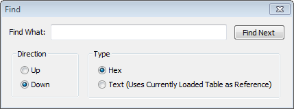
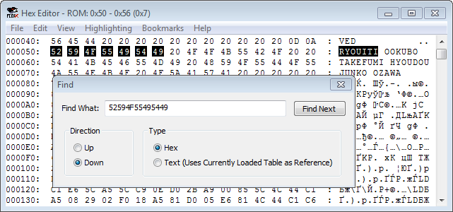
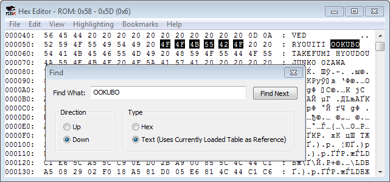

Содержание
Окно вызывается через Edit -> Find или комбинацией Ctrl + F.

В разделе Type ты выбираешь тип данных - байты (опция Hex) или текст/символы (опция Text). В разделе Direction выбираешь направление поиска - вверх (опция Up) или вниз (опция Down).
Попытавшись искать байты с опцией Text, или текст с опцией Hex, окно Find выдаст ошибку Invalid String (неверный ввод).
Поиск будет осуществляться по выбранной области во вкладке View. В поиск можно вводить сразу несколько байтов/символов. Найденные результаты поиска подсвечиваются как при выделении мышкой этих адресов.
Максимум будет выделено не более 30 символов, но это не повлияет на результат поиска.
При выборе опции Hex, поиск будет искать байты в адресах. Байты не обязательно записывать заглавными буквами.

Если выбрана опция Text, поиск будет работать с кодировкой байтов в правой части окна. Поиск текста чувствителен к регистру (строчные и заглавные буквы).

Поиск текста технически является поиском соответствующих байтов. Если у одного и того же символа существует несколько вариантов байтов, поиск текста будет искать лишь самый младший из них, из-за чего он может и не найти желаемого результата.
Если подключить свою кодировку через файл .tbl, текс будет искаться с учетом новой кодировки.
Если существует 2 и более результатов поиска, то нажимая на кнопку Find Next, Hex Editor будет переключаться между этими результатами в ту сторону, которая была выбрана в разделе Direction.
Если вообще никаких результатов не было найдено, будет сообщение String Not Found (результатов не найдено).
Если существует всего 1 результат поиска, начальный адрес которого уже выделен в Hex Editor'е (или выделен как первый адрес диапазона), то при повторном нажатии кнопки Find Next окно Find сообщит, что String Not Found.